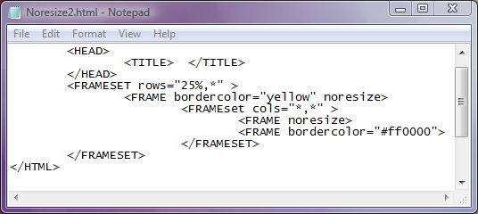

Atributul noresize
Oricare din exemplele de pagini web din sectiunea Cadre le-ati deschide, veti putea vedea ca,
prin tragere cu mouse-ul, chenarele dintre cadre pot fi deplasate, redimensionandu-se astfel cadrele.
Acest fapt este de cele mai multe ori nedorit. Pentru a impiedica redimensionarea unui cadru se
utilizeaza atributul noresize al etichetei FRAME. Atributul noresize nu are nici o valoare.
Simpla lui prezenta inlatura posibilitatea utilizatorului de a redimensiona cadrul!
Iata mai jos un exemplu, in care prezenta atributului noresize blocheaza chenarele cadrelor. Click
pe cod pentru a deschide pagina web.

Inapoi la Cadre...